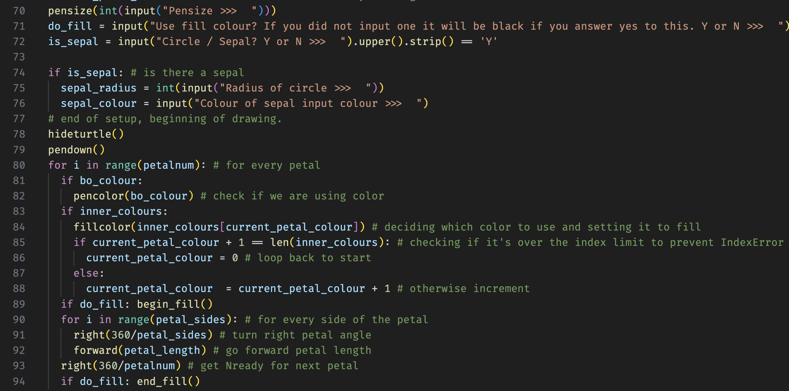

This is a simple HTML boilerplate. Based in Greytown, New Zealand, Finn-Oskar offers high quality tutoring services to students taking NCEA Level 1 Mathematics and Science. Finn-Oskar also offers Web Development and Maintenance services for static websites.
About Me
I am a year 11 student specialising in NCEA Level 2 Digital Technologies, Level 2 Mathematics, Level 1 Science and Level 1 Theatre.
I enjoy teaching fellow students, running and performing live drama.
Our Services
I offer tutoring services, especially targeted at residents of the South Wairarapa. I also offer a web development service.
Contact Us
Email us at finn-oskar@mikkelsen.co.nz
Our Features
- High-quality service
- 24/7 customer support
- Fast and reliable solutions
Steps to Get Started
- Sign up for an account
- Choose your plan
- Enjoy our services
What have I done?
Throughout my school years, I have worked on FLORIS, a flowermaking python bot using the Turtle module and a website containing information on foraging wild goods in the Wairarapa.
I am currently working on a Habit Tracking App, which will be available for download from this website sometime in the future.
Download my FLORIS program here.
Cheers, Finn-Oskar

A placeholder image.
Some of the python code for FLORIS, my flower-making program.
A picture of a flower made using FLORIS.

The home page of my Wairarapa Foraging website.
Why Did I Make This Website?
-
Portfolio- Holding my previous assessments and projects.
-
Networking- My own website gives me an increased ability to network with others and connect with clients.
-
Resources- This website will hold videos of past tutoring sessions, for public use and for revision by those I tutor.
-
Practice- This website is itself a project, not only in digital design and technology but also in networking and practical skills.